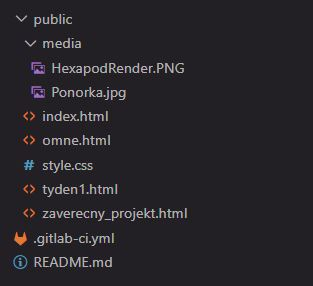

1. týden: Úvod a dokumentace
Během prvního týdne bylo úkolem vytvořit si osobní stránky a představit prvotní ideu závěrečného projektu.
Tvorba webových stránek
Vzhledem k tomu, že s tvorbou webů nemám žádné předchozí zkušenosti, nebylo mým cílem vytvořit nic přehnaně komplexního. Zvolil jsem radši minimalistický a přehledný design.
Začal jsem se základním návodem pro GitLab Pages a následně jsem zhlédl několik úvodních videí na YouTube, abych pochopil základy HTML a CSS. Při psaní kódu jsem využíval umělou inteligenci (Gemini). Snažil jsem se však kód slepě nekopírovat, ale pochopit ho, a používat AI spíše jako nástroj pro efektivnější práci.
Pro lepší udržitelnost jsem se snažil projekt logicky strukturovat. Zatímco HTML soubory tvoří samotný obsah stránek, jejich vzhled je dán souborem style.css. Všechny obrázky jsem přesunul do samostatné složky media.

Jelikož by celková velikost webu neměla přesáhnout 100 MB a plánuji nahrávat velké množství obrázků a videí, bude nutné všechna média komprimovat. Fotografie z iPhonu, které mívají několik megabajtů, budu zmenšovat pomocí aplikace Výstřižky ve Windows - ta je dokáže zmenšit na 100 až 300 kB bez viditelné ztráty kvality. Videa pak budu upravovat v bezplatném programu Shotcut.
Ke každému projektu budu přikládat jeho zdrojový kód. Pro lepší čitelnost a přehlednost využívám knihovnu Prism.js, která zvýrazňuje syntax. Kód tak vypadá podobně jako např. ve VS Code.
<!DOCTYPE html>
<html lang="cs">
<head>
<!-- ... -->
<link rel="stylesheet" href="style.css">
<link href="https://cdnjs.cloudflare.com/ajax/libs/prism/1.29.0/themes/prism-tomorrow.min.css" rel="stylesheet" />
</head>
<body>
<!-- ... -->
<div class="code-container">
<div class="code-header">
<div class="code-info">
<button class="toggle-btn" title="Rozbalit/Sbalit kód">▼</button>
<span class="lang-badge">HTML</span>
<span class="language-label">vkladani_kodu.html</span>
</div>
<button class="copy-btn">Kopírovat</button>
</div>
<div class="code-content">
<pre><code class="language-html">
<!-- Zdrojový kód -->
</code></pre>
</div>
</div>
<!-- ... -->
<script>
document.addEventListener('DOMContentLoaded', () => {
const codeContainers = document.querySelectorAll('.code-container');
codeContainers.forEach(container => {
const toggleBtn = container.querySelector('.toggle-btn');
const copyBtn = container.querySelector('.copy-btn');
const codeContent = container.querySelector('.code-content');
const codeBlock = container.querySelector('code');
codeContent.classList.add('collapsed');
toggleBtn.textContent = '▶\uFE0E';
toggleBtn.addEventListener('click', () => {
codeContent.classList.toggle('collapsed');
if (codeContent.classList.contains('collapsed')) {
toggleBtn.textContent = '▶\uFE0E';
} else {
toggleBtn.textContent = '▼\uFE0E';
}
});
copyBtn.addEventListener('click', () => {
const textToCopy = codeBlock.innerText;
navigator.clipboard.writeText(textToCopy).then(() => {
const originalText = copyBtn.textContent;
copyBtn.textContent = 'Zkopírováno';
copyBtn.style.color = '#28a745';
setTimeout(() => {
copyBtn.textContent = originalText;
copyBtn.style.color = '';
}, 2000);
}).catch(err => {
console.error('chyba ', err);
copyBtn.textContent = 'Chyba!';
});
});
});
});
</script>
<script src="https://cdnjs.cloudflare.com/ajax/libs/prism/1.29.0/prism.min.js"></script>
<script src="https://cdnjs.cloudflare.com/ajax/libs/prism/1.29.0/components/prism-c.min.js"></script>
<script src="https://cdnjs.cloudflare.com/ajax/libs/prism/1.29.0/components/prism-cpp.min.js"></script>
<script src="https://cdnjs.cloudflare.com/ajax/libs/prism/1.29.0/components/prism-python.min.js"></script>
</body>
</html>Prvotní idea závěrečného projektu
Jako závěrečný projekt se pokusím postavit hexapoda, tedy šestinohého robota. Tento projekt plánuji již delší dobu, jsem tedy rád, že mám konečně záminku ho zrealizovat.

Mým hlavním cílem je vytvořit hexapoda postaveného na Raspberry Pi 5, který bude splňovat následující:
- Chůze v libovolném směru bez nutnosti otáčet tělo, tedy "krabí" chůze.
- Možnost přepnout mód chůze na pohyb dopředu a dozadu s běžným zatáčením.
- Možnost přepínání mezi různými vzory chůze (gaity).
- Náklon těla ve třech osách (roll, pitch, yaw) a jeho posun ve třech osách (x, y, z).
- Schopnost provádět všechny výše zmíněné náklony a posuny současně, a to i během chůze.
- Možnost konstrukci vytisknout na 3D tiskárně Bambu Lab A1 mini (tisková plocha 180 × 180 mm).
- K robotovi chci navíc sestrojit dálkový ovladač, který bude postavený na Arduinu a bude komunikovat přes Bluetooth.